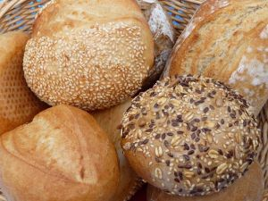

How TO
Recipes and More
Bread
White Bread

ingredients
- 11 c. flour
- 2 T. yeast
- 6 T. sugar
- 6 T. oil
- 4T salt
- 1 c. milk
- 3 c. water
- Equipment: kettel, Large mixing bowl, Large mixing spoon (wooden), 4 cup glass measruring cup, plasic wrap, dish
Steps
- Put water in a kettel and turn on to heat up.
- Put 4 cup of all your dry ingredients into a very large bowl and stir to combine.
- Pour oil and milk into a large measruring cup. If you don't have a large measruring cup, just combine them.
- Start adding the 3 cup of hot water. When you only have about half a cup left, feel the water and keep stiring.
- Mix the liquids ito the flour with a large spoon.
- Pour the remaining flour in to the bowl and keep stiring if it gets to hard add more water.
- Keep adding flour until it is at a consistency where it is no longer sticking to your fingers.
- Kned it for about 10 mitnutes.You can't over kned it when you do it by hand.
- Stop when you press on it and it spring back.
- Pour oil around the edge of the bowl spin the dough and cover the dough on the oil.
- Cover the bowl with plastic wrap then a towel
- If your in a hurry then put in a warm place.
- After it has doubled is size, form it how you want it.
- Let it rise for another 40 minutes before baking at 400 degrees in the oven for 20 minutes.
<